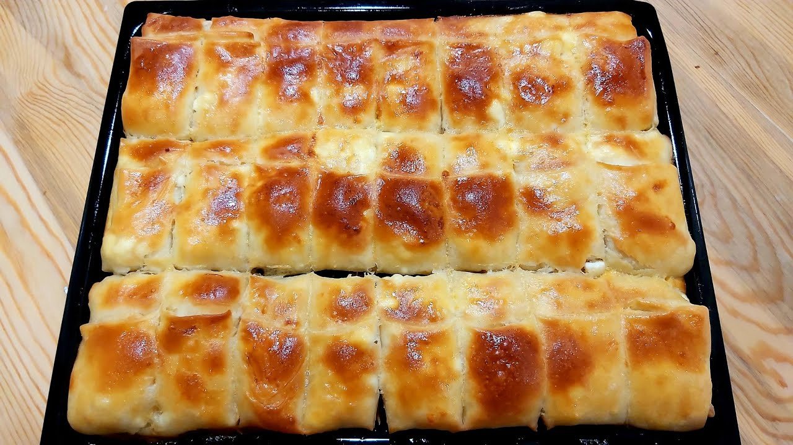

Štrudla sa sirom

Opis
Detaljan recept za uvijek savršenu domaću štrudlu sa sirom. Recept za vučeno tijesto od crnog brašna i opis postupka razvlačenja tijesta.
- 400 g glatkog brašna (bijelog ili crnog)
- 5 g soli
- 250 ml tople vode
- 1 žličica octa (jabučnog)
- 3 žlice ulja
- 1 kg svježeg sira
- 5 g soli
- 2 jaja
- Kad se radi sa svježim vučenim tijestom, sir ne smije biti previše vlažan. Potrebno ga je pripremiti dan ranije na ovaj način: svježi sir posoliti, staviti ga u plastično cjedilo, poklopiti ga tanjurom i staviti cjedilo u drugu posudu gdje će otjecati tekućina. Ostaviti u hladnjaku preko noći.
- Pjenjačom izmiješati sir i dva jaja da se sve poveže
Priprema tijesta
- Pomiješati brašno i sol. Napraviti malu udubinu u sredini i uliti vodu, malo octa i ulje. Izmiješati vilicom i zatim rukama umijesiti glatko tijesto koje se ne lijepi za ruke. Ostaviti da se odmori nekoliko sati (može i preko noći).
- Upaliti pećnicu na 200°. Na pobrašnjeni stolnjak staviti tijesto, pobrašniti ga i izvaljati koliko ide valjkom.
- Nastaviti razvlačiti tijesto rukama: podvlačiti dlanove od sredine tijesta prema rubovima i tako ukrug sve dok se tijesto ne razvuče malo preko ruba stola.
- Ovako tanko treba biti tijesto, skoro prozirno i kao paučina.
- Nauljiti tijesto i rasporediti 2/3 sira. Može se i samo s jedne strane staviti sir, ali je u tom slučaju dovoljno i pola kile sira. Preklopiti tijesto preko sira i staviti preostalu 1/3 sira.
- Podignuti rubove stolnjaka i zarolati štrudle sa svake strane.
- Izmjeriti prema plehu dužinu štrudle. Prvo prstom pritisnuti tijesto, a zatim lopaticom ili tanjurićem odrezati dijelove. Pažljivo prenijeti štrudle na nauljeni pleh.
- Poslagati štrudle u pleh. Nauljiti ih odozgo ili premazati rastopljenim maslacem. Staviti peći u donji dio pećnice na 200°40-ak minuta.
- Izvaditi iz pećnice kad dobije boju i zapeče se odozdo.